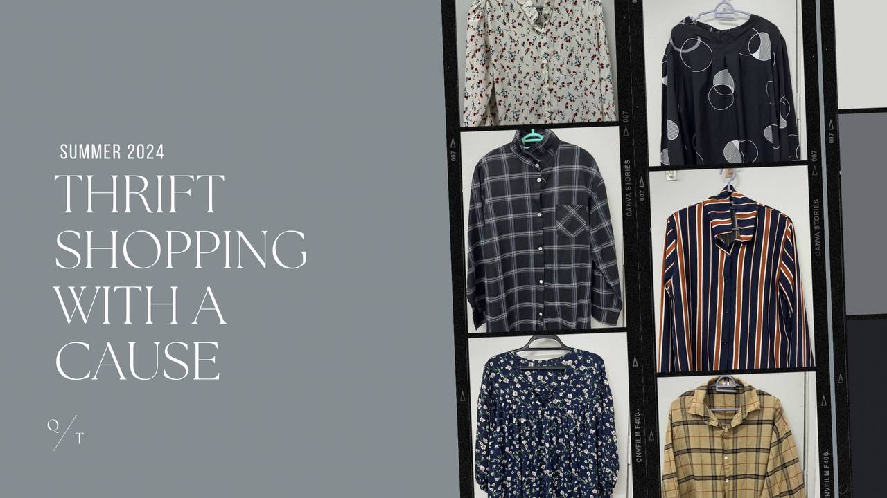

"Mision Statement"
Our mission is to offer an affordable, sustainable shopping experience that benefits both our customers and the community. We strive to provide high-quality, second-hand items while promoting environmental consciousness. Our store aims to be a beacon of sustainability, encouraging others to embrace eco-friendly practicesThrough our efforts, we aim to inspire a cultural shift towards more mindful consumption habits. Our dedication extends beyond providing goods; we actively engage with our community to foster a sense of responsibility and stewardship towards our planet.
"Vison Statement"
Our vision is to be a leading thrift store that not only provides exceptional value to our customers but also actively contributes to a sustainable future. We aim to expand our reach and continue supporting the community through various initiatives. We envision a world where second-hand shopping is mainstream and accessible to everyone.s we grow, our commitment to sustainability remains unwavering, ensuring a lasting positive impact on both local communities and the global environment. Our ultimate goal is to inspire a global movement towards sustainable living, where every purchase from Thrift Store is a step towards a greener future.